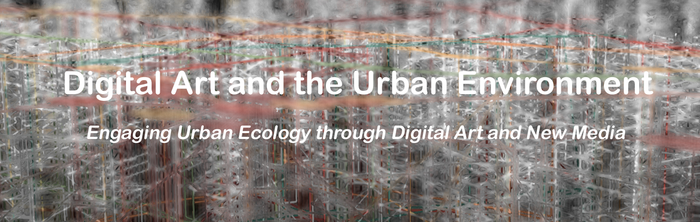
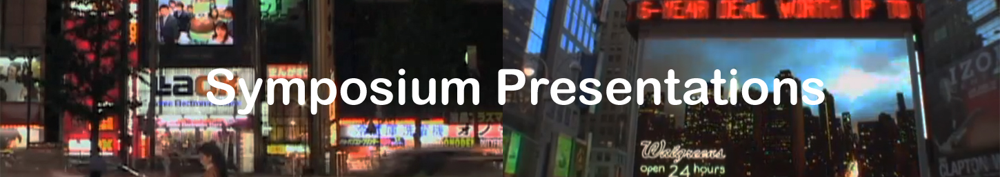

|
|
|
|

The purpose of this symposium is to formally appraise the ways new media and digital artists engage urban ecology. It gathers together contributions from artists, architects, computer scientists, designers, urban planners, social scientists, critical theorists, and others to consider these new modes of seeing, representing, and connecting within the urban setting.
Symposium
Friday, October 4, 2013
9:00 AM – 6:00 PM
Multipurpose Room (B - level)
Pace University
1 Pace Plaza, New York, NY 10038
Free Admission
Opening: October 4, 2013
Closing: October 25, 2013
M – Th : 12:00 PM – 5:00 PM
Pace Digital Gallery
163 William Street
Artists
Stanza
Annette Weintraub
Lynn Cazabon
Robert Ladislas Derr

Malin Abrahamsson
Digital Artist, Brooklyn, NY
Solar Cycle 24 – An Urban Art Installation
“Solar Cycle 24” is a digital public art installation in a “non-art” venue with a focus on place-making and aesthetics in the urban environment. It draws attention to an actively occurring astronomical event, solar cycle #24: the recurring phenomenon of solar storms and resulting spectacular activity of aurora borealis, or northern lights, which ebb and flow on eleven-year cycles but is only visible around the North and South Poles.
Alice Arnold
Filmmaker, A2 Studio
Electric Signs - Movie Premier
ELECTRIC SIGNS is a poetic documentary about signs, screens and the urban environment. The film's narrator, a city observer modeled on the critic Walter Benjamin, takes us on a journey thru a variety of urban landscapes, examining public spaces and making connections between light, perception and the culture of attractions in today's consumer society.
Tega Brain1 & Jodi Newcombe2
1 College of Fine Arts, University of New South Wales, Sydney, Australia
2 Queensland University of Technology, Australia
Mediating Environmental Stewardship through Public Art: An Emerging Practice from Down Under
Several Australian public artworks are discussed that employ environmental data to construct and disseminate representations of local environmental conditions that usually escape everyday perception. Artists surveyed are associated with the Australian curatorial organization Carbon Arts, which actively commissions, produces and curates creative work that responds to complex environmental challenges and facilitates engagement among the disciplines of science, engineering, arts and policy in order to bring new perspectives and means of public participation to environmental issues. This presentation highlights an emerging practice Down Under which is seeing artists play a key role in setting the sustainability agenda.
Brian A. Brown
Department of Communication, Media and Film, University of Windsor, Ontario, Canada
The Work of Street Art in the Age of Digital Reproducibility
This presentation argues that ‘street art’ is a mode of artistic expression reliant on the vagaries of the urban environment as its canvas and, as a result, is ultimately dependent on digital technologies to document, disseminate, and reproduce the inherently ephemeral artworks themselves. It is this inherent ephemerality that requires the original piece be digitally documented and preserved. The digital camera and the Internet in particular, then, serve to preserve the work of street art that, in their absence, would otherwise be lost to time.
Lynn Cazabon
Visual Arts, University of Maryland, Baltimore County, MD
Uncultivated, a Public Art Project
Uncultivated is a public art project consisting of geo-referenced photographs, a website, commercial displays (billboards, transit posters, banners), public ‘plant walks’, and exhibition prints representing wild plants within urban landscapes over time. The project draws attention to tiny pockets of wildness within the urban environment and reflects upon how urban landscapes are evolving due to the effects of climate change.
Grisha Coleman1, Daragh Byrne1, Vita Berezina-Blackburn2, Katelyn Parady3, John Oduroe4
1School of Arts, Media + Engineering, Arizona State University, Tempe, AZ
2Advanced Computing Center for the Arts and Design, Ohio State University, Columbus, OH
3School of Human Evolution & Social Change, Arizona State University, Tempe
4Independent Architect
Panel: Transdisciplinary Collaboration on Urban Desert Ecologies in Echo::System
This panel presentation will examine intersections of art, environmental sciences and technology, information and place, performance, and public engagement, through the practical realization of the artwork echo:system, a hybrid work of interactive installation and performance that explores socio-cultural and ecological aspects of natural/urban biomes. The panel will emphasize discussion of cross-collaboration which integrates complimentary practice to explore and make manifest the relationship between the urban and the natural environment in the context of the echo::system project.
Ulrik Ekman
Department of Arts and Cultural Studies, University of Copenhagen, Denmark
Topological Design of the U-City: Finitude?
This presentation focuses on the design of contemporary urbanity, more specifically on the ongoing efforts towards designing the u-city (the ubiquitous city; the intelligent city; the smart city) as a mixed reality with human as well as technical context-awareness in operation. Such a design of the u-city for networked societies presupposes an exceedingly rich and complex interactivity among ecological, technical, medial, communicational, sociocultural, aesthetic, and psychological multiplicities of nodes. This presentation explores whether and how, design as topology provides a productive approach to answering questions about cities' multiplicities, dynamics, and their creative or innovative character; considering the general design of the South Korean u-city Incheon (Songdo) as just one among the growing number of exemplary contemporary u-cities in South-East Asia, Europe, and the United States.
Vaughn Whitney Garland
Media, Art, and Text Program, Virginia Commonwealth University, Richmond, VA
Participation in the Digital Public: New Media Art as Online Community
Nam June Paik claimed the birth of media art occurred with John Cage’s 1951 radio performance of Imaginary Landscape IV. For Paik, Cage’s remediation of the widespread applications of the radio, its stations, shared radio waves, and receivers into materials for the production of art associated media art with the technological applications developed through active group utilization of a shared technology. In a reevaluation of Paik’s initial assertion an argument is made for a closer examination of online art, which employs collaborations between online and offline communities, artists, and technologies. It calls for a better understanding of new media art that seeks to understand the creative re-formations of technologies integrated and developed through public social collaborations and use.
Pedro Silva Marra & Carmen Aroztegui Massera
New Media Convergence Centre - UFMG, Belo Horizonte, MG, Brazil
Mobile Maps on Chameleonic Cities : Urban Cartographies, Methodological Procedures and Experiences
Since 2003, we have been researching citizen’s everyday practices in the urban spaces of Belo Horizonte, the capital and largest city in the Brazilian state of Minas Gerais, in order to determine their role within the city's spatial configuration. Recently, economic prosperity and the projection of mega events, such as the World Cup and the Olympic Games, provoked adaptations of the city center, resignifying Belo Horizonte’s urban space, under the sign of urban requalification, gentrification, and real-state speculation - dramatically changing the city’s image. Traditional academic fieldwork and artistic projects have difficulties capturing both features - these chameleonic city's characteristics, and the continuous growth of urban images and representations. This presentation discusses some of the strategies we have devised - inspired by contemporary urban arts - in order to deal with those questions.